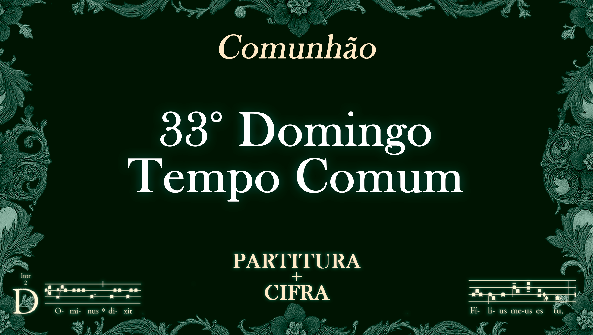
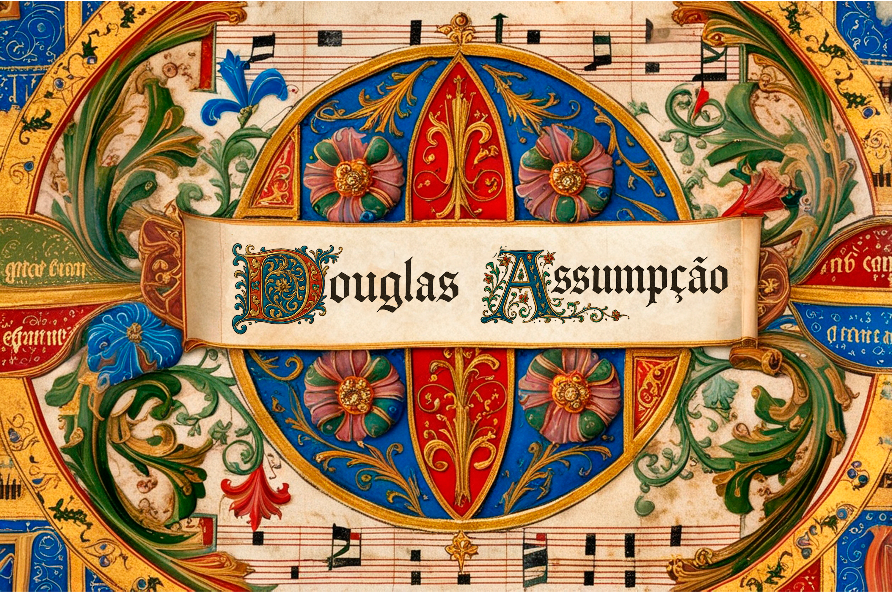
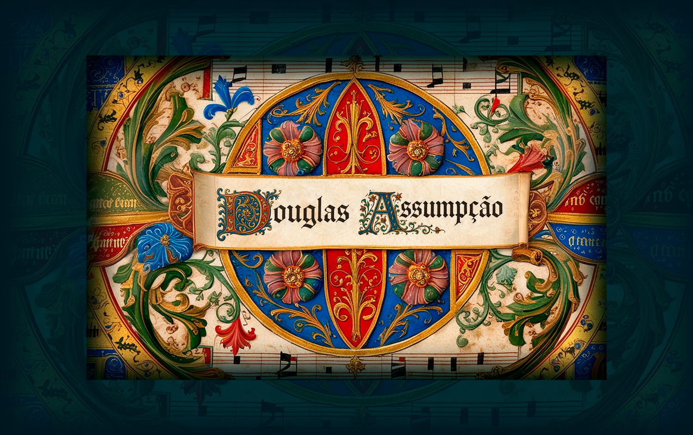

#FORMA��O
Mat�ria formativa � T�tulo provis�rio
Conte�do formativo � clique no bot�o para abrir a p�gina completa.


Conte�do formativo � clique no bot�o para abrir a p�gina completa.
As indulg�ncias pro defunctis s�o como �uma mesa enorme...�

O que s�o os chamados �sufr�gios�? Que boas obras n�s...

Pe�amos nesta ladainha a intercess�o de todos os santos...